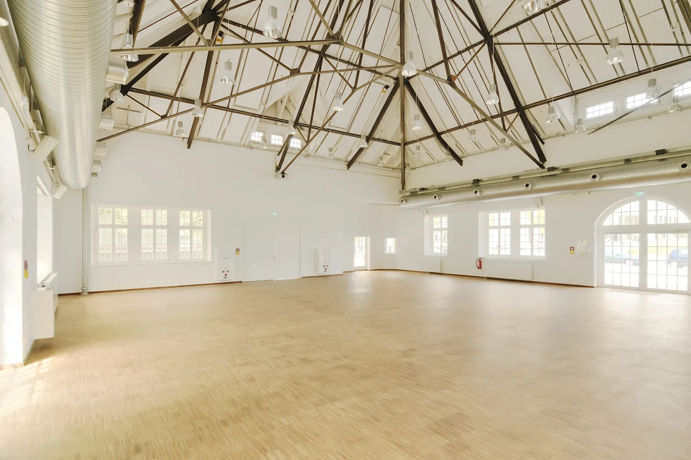
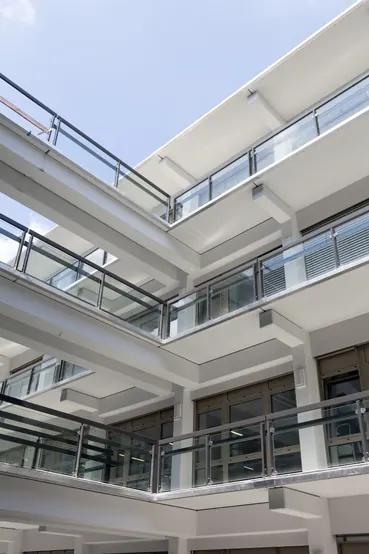
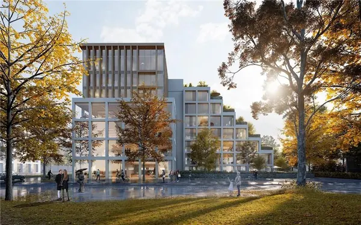
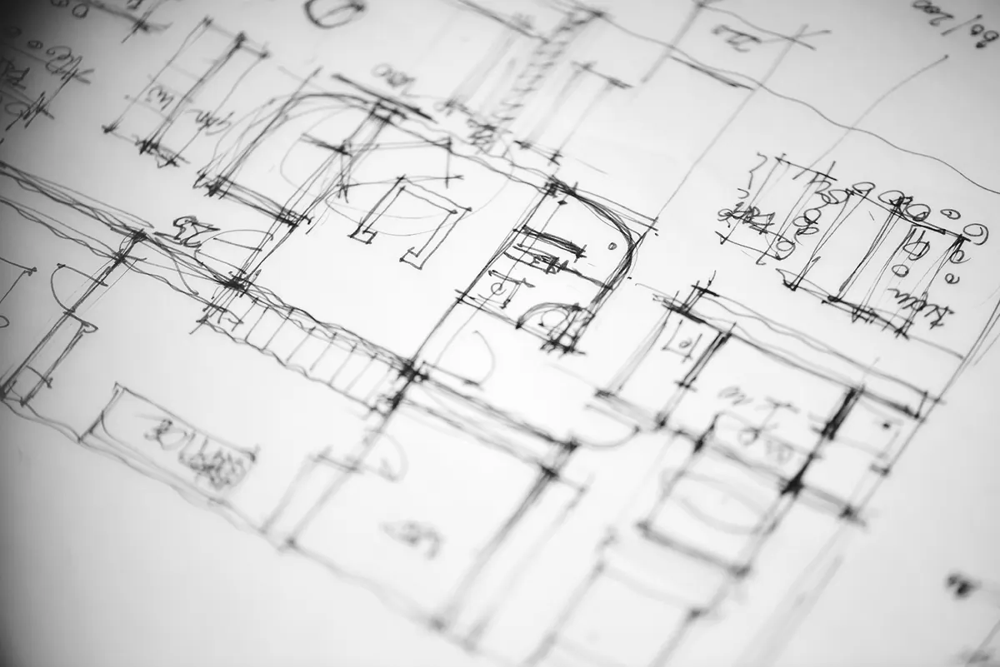
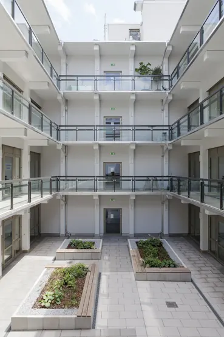
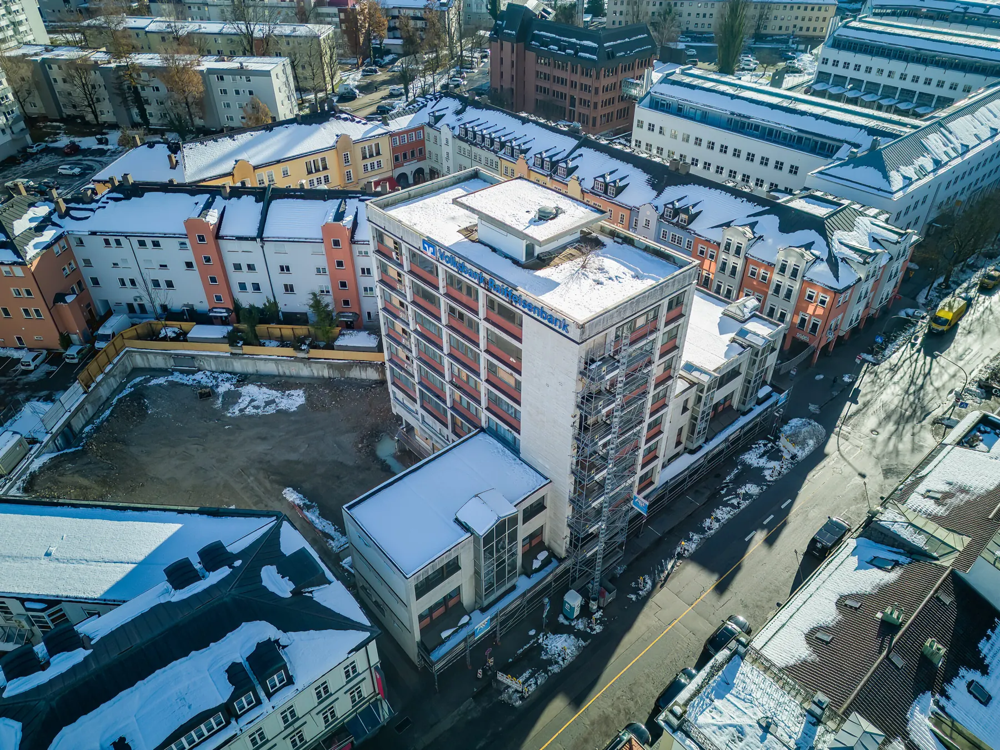
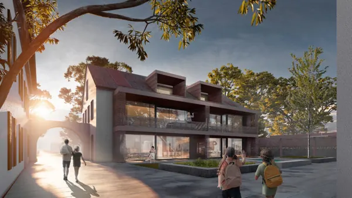
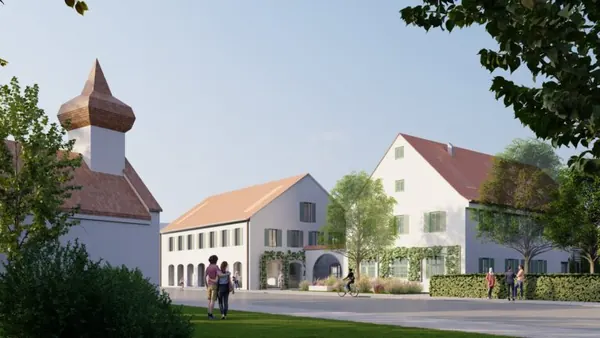
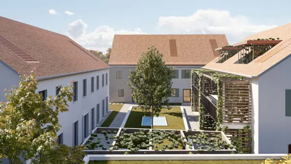
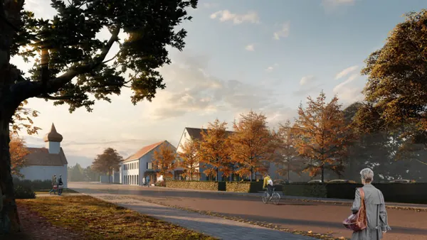

Willkommen bei Brückner Architekten: Experten für Nachhaltiges Bauen und Sanierung im Bestand: Die …
Bauen im Bestand
Warum Bestand
Willkommen bei Brückner Architekten: Experten für Nachhaltiges Bauen und Sanierung im Bestand
Gaszählerwerkstätte, München
Die Zukunft des Bauens wird maßgeblich durch den Bestand geprägt sein – und mit über 19 Millionen bestehenden Gebäuden in Deutschland ist dies mehr als einleuchtend. Unsere Überzeugung besteht darin, dass bestehende Gebäude erhebliche Chancen bieten, wenn sie sowohl energetisch als auch funktional und gestalterisch durch gezielte Anpassungen überzeugen können. Für uns bedeutet Umbau und Sanierung keineswegs, Einschränkungen aus den Bestandsgebäuden zu akzeptieren. Vielmehr sehen wir darin die Gelegenheit, aus dem Bestand heraus mit deutlich reduziertem Mitteleinsatz die Qualitäten eines Neubaus zu schaffen – und das sowohl in funktionaler, technischer als auch gestalterischer Hinsicht. Diese Herangehensweise erweist sich fast immer als deutlich kostengünstiger als Rück- und Neubauoptionen.
Gaszählerwerkstätte, München
Die Sanierung durch Brückner Architekten hat die ehemalige Gaszählerwerkstätte erfolgreich auf den modernen Stand der Technik gebracht, wobei gleichzeitig der Charme des im Jahr 1907 erbauten Gebäudes bewahrt wurde.

Nachhatiges Bürogebäude in Oberhaching Fertigstellung 2024
Höchste Ansprüche an die Nachhaltigkeit bei Bau und Nutzung: Das oha works wird besonders ressourcenschonend und teilweise in Holzhybrid-Bauweise errichtet. Schon während des Bauprozesses werden Materialien gezielt eingesetzt, um eine spätere Recyclingfähigkeit zu gewährleisten. Zusätzlich wird darauf geachtet, so viele Emissionen wie möglich zu reduzieren. Die Bürogebäude werden mittels Geothermie beheizt, und ein erheblicher Anteil des Strombedarfs wird durch die eigene Photovoltaikanlage erzeugt. Dies ermöglicht einen weitgehenden Verzicht auf fossile Energieträger im Betrieb. Das Ziel ist die Zertifizierung nach LEED Platinum & WiredScore Gold für das Gebäude.

Als Brückner Architekten den Auftrag von der Firma Investa erhielten, einen Entwurf für ein bestehendes Gebäude in der Arnulfstraße 199 zu entwickeln, in dem nach Fertigstellung ein Rechenzentrum von Telefonica, ein Gesundheitszentrum und Einzelhandelsgeschäfte untergebracht werden sollen, war ihnen sofort klar, welche Methode bei der Planung und Umsetzung angewandt werden sollte. Diese Methode hat sich bei anderen Bauvorhaben von Brückner bereits bestens bewährt: eine radikale Orientierung an den Wünschen und Bedürfnissen der Nutzer und deren Anspruchsgruppen, zu denen natürlich auch der Investor gehört.

Sanierung mit Blick auf hohe Aufenthalts- und Gestaltungsqualität
Meine Volksbank Raiffeisenbank, Rosenheim
Die Bankfiliale der Volksbank Raiffeisenbank in Rosenheim wurde neu konzipiert. Dabei wurden individuelle Beratungswelten in einer flexiblen Umgebung geschaffen.
Die Zukunft des Bauens liegt im bESTAND
Mittlerweile machen Neubauten nur noch einen geringen Anteil der Arbeit von Architekt:innen und Ingenieur:innen aus, der Großteil aller Bauaufgaben sind heute Sanierungen. Dieser Gebäudebestand lässt sich oft nur durch mutige Veränderungen mit Blick auf langfristige Nutzungsszenarien erhalten. Bei der Beschäftigung mit denkmalgeschützten Bauten stellt dies nicht selten eine Konfliktlinie dar, die nur über eine präzise Zielbetrachtung und in fortwährendem Austausch aufgelöst werden kann.
Warum sanieren und nicht abreißen?

Der bereits bestehende, aus dem Baujahr 1968 stammende, fünfgeschossige Baukörper (Erdgeschoss + vier Obergeschosse sowie eine Tiefgarage mit zwei Untergeschossen) wurde von Grund auf saniert. Im Zuge der Sanierung wurden die Bestandsstützen statisch ertüchtigt und im Innenhof ein Laubengang über alle Geschosse errichtet. Außerdem wurde eine vollständige Stahlbetonsanierung der Tiefgarage vorgenommen. Die Decke der Durchfahrt sowie die Innenhofdecke wurden teilweise erneuert.

Wie wir sanieren
Sanierung im Fokus: Herausforderungen und Lösungen in der zeitgenössischen Architektur
Unsere Begeisterung für Bestandsgebäude ist zentraler Antrieb. Angesichts der drängenden Klimaziele bis 2050 wird die Sanierung von Bestandsgebäuden zu einer bedeutenden Herausforderung, da ein beträchtlicher Teil der CO2-Emissionen aus dem Betrieb von Gebäuden stammt. Die wahre Kunstfertigkeit eines Architekten zeigt sich in seiner Erfahrung im Umgang mit Bestand:
Grünwalder Einkehr, München Fertigstellung 2024
Bauen im Bestand: Von der Planung bis zur Umsetzung bieten wir Ihnen maßgeschneiderte Lösungen für Ihre Bauvorhaben. Informieren Sie sich jetzt!
Transformative Eingriffe sind entscheidend, um Bestehendes in der Architektur dauerhaft zu erhalten. Die Veränderungen während dieses Erneuerungsprozesses resultieren aus gesellschaftlichen, politischen, ökonomischen oder ökologischen Anforderungen. Über die Hälfte der weltweit vorhandenen grauen Energie ist in den Rohbauten von Gebäuden gebunden. Unsere Planung zielt darauf ab, diese Rohbauten zu erhalten, wodurch die Wertschätzung und Weiterentwicklung des Bestehenden gleichzeitig einen aktiven Beitrag zum Klima- und Ressourcenschutz darstellen. Brückner Architekten hat das Schatzgräber-Gen, analysiert diverse Fassungen auf Zukunftsfähigkeit und erkennt Chancen im Bestand.
Unser Team
Die einzelnen Kompetenzen unseres Teams im Überblick:
Bauen im Bestand: Nachhaltige Lösungen für Ihre Modernisierung
Die Planung und Umsetzung von Bauvorhaben folgt oft einer strukturierten Abfolge von Phasen gemäß der Honorarordnung für Architekten und Ingenieure (HOAI). Dazu gehören Planungsphasen wie Entwurfs- und Ausführungsplanung sowie Bauphasen wie die Vorbereitung der Vergabe, Mitwirkung bei der Vergabe und Objektüberwachung.
In der Entwurfsplanung wird das Konzept vertieft, unter Berücksichtigung von Änderungen und Fachplanerergebnissen. Nach Freigabe werden Bauanträge erstellt und eingereicht. Die Ausführungsplanung passt den Entwurf an die technischen Anforderungen an, erstellt konstruktive Pläne und bereitet die Vergabe vor.
Die Bauausführung umfasst die Vorbereitung der Vergabe, Einholung von Angeboten, deren Prüfung und die Koordination der Bauarbeiten. Die Objektüberwachung beinhaltet die Überwachung der Arbeitsschritte, der beteiligten Handwerker und Fachplaner während der Bauphase.
Sanieren, renovieren, modernisieren - Mit unserem Team realisieren Sie Ihr Bauvorhaben im Bestand. Jetzt unverbindlich beraten lassen!
Die Erfahrung unseres Büros mit dem Bauen im Bestand, insbesondere im Kontext der energetischen Gebäudesanierung, fußt auf inzwischen unzähligen fertiggestellten Projekten in über 50 Jahren. Durch unsere lange Bürogeschichte sind wir zunehmend auch mit Sanierungen und Anpassungen unserer eigenen Gebäude befasst. Aus den sehr unterschiedlichen energetischen Sanierungsaufgaben hat sich bei Brückner Architekten ein großes Know-how entwickelt. So individuell diese energetischen Sanierungsaufgaben jeweils sind und waren, unsere Herangehensweise an sämtliche Projekte, speziell Bestandgebäude, ist immer getragen von einer vorbehaltlosen Auseinandersetzung mit dem Werk und seiner Entstehungszeit. Die Integration von Grauer Energie in den Bauprozess sowie die Reduzierung des ökologischen Fußabdrucks stehen dabei im Fokus unserer Planungen. Das Einfühlungsvermögen in gegebene Zusammenhänge, der Spaß an Entdeckungen und am Unerwarteten treten vor die Lust, etwas grundsätzlich Neues zu schaffen. Unser Ansatz bei Bauen im Bestand und energetischer Gebäudesanierung verbindet Tradition mit Innovation, um nachhaltige und effiziente Lösungen für die Herausforderungen unserer Zeit zu schaffen.


Architekt für Altbausanierung, Architekt für Umbau finden, Bauen im Bestand Unternehmen, Energieberater, Architekt für Umbau finden

Weitere Ansichten
4 Bilder



Wir haben IhrInteresse geweckt?
Sie haben Fragen oder wollen einen Termin vereinbaren?